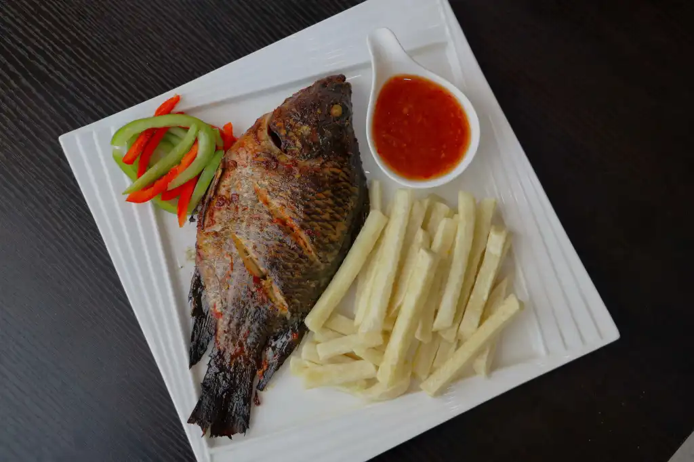

Koliko

Koliko is a simple dish...fried yams that's all
often eaten with crushed pepper
In this dish we will go for koliko and fish
Ingredients:
- medium sized drum fish
- 1 package Sympli Yam Fries
- 1 medium sized tomato
- 2 small fresh red peppers
- 1/2 medium sized onion
- 2 minced garlic cloves
- 2 tablespoons vegetable oil
- 1/4 teaspoon curry powder
- 1/4 teaspoon of thyme
- 1 seasoning cube 1/2 teaspoon white pepper
- 1 tablespoon sweet chilli sauce
- 1 tablespoon of ketchup
- 1 tablespoon of Suya spices
- ¼ teaspoon ground nutmeg
- Salt to your taste
Steps
- In a bowl, put the flours,
and pour little by little 3/4 l of boiling water until you have a homogeneous paste.
Thoroughly wash the drum fish with tap water. Don't forget to remove the scales and remove the head of the fish.
Then dry it gently with a paper towel before setting it aside.
- Then heat the oven to 180°C.
- Add a little boiling water if the dough is too hard.
Keep stirring until you get a thick paste. Add boiling water if needed.Add the tomato,
fresh chilli, onion and garlic to a food processor or blender.
Press the button for 30 seconds on medium speed until a medium smooth puree is formed.
Then place the contents in a bowl and add all the other ingredients and mix with a spoon.
- Cooking is complete when the dough comes away from the edges of the pan.
Then place the drum fish on a cutting board and make three deep slits on each side of the fish to allow the marinade to penetrate more easily.
Then generously coat the fish with the marinade on both sides before setting aside a little marinade to be able to brush the fish.
- Mold portions with your hands and serve on each plate.Place the fish on the middle rack of the preheated oven.
After 20 minutes, brush the fish with the marinade and a tablespoon of olive oil and let it grill for another 15 to 20 minutes.
- Heat 475 ml of vegetable oil in a frying pan.
In a bowl, add the Sympli yam fries and salt to taste then mix.
Then use cooking tongs to gently drop the yam fries one by one into the hot oil.
Be careful not to overload the pan. Let them fry for 5-7 minutes, until crispy.
CAUTION:
Oil may bubble and be ejected from the fryer.
drop one fry at a time into the boiling oil.
Only fry small amounts of frozen food at a time, making sure to remove any excess ice before frying.
If frozen fries are stuck together, allow them to thaw slightly,
then pull them apart before inserting them into the boiling oil.
DO NOT LEAVE FRYER OR FRYING PAN UNATTENDED.
Serve Sympli yam fries and grilled fish in a dish with sweet chili sauce or ketchup.
Enjoy your food!!
HOME